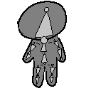

День 2 - Работа с мешем, скульптинг и топология
Сегодня переходишь от примитивов к формированию модели: редактирование геометрии, базовая топология и создание low poly персонажа.
Режимы работы
- Object Mode - работа с объектом целиком
- Edit Mode - редактирование геометрии
- Переключение: Tab
Элементы меша
- 1 - вершины
- 2 - ребра
- 3 - полигоны
Базовые операции
- G / R / S - перемещение, вращение, масштаб
- E - Extrude (вытягивание)
- I - Inset (внутренняя граница)
- X - удаление
Принципы топологии
- предпочитай квадраты (quads)
- не перегружай сетку лишними полигонами
- форма важнее мелких деталей
- для этого этапа нужна простая и читаемая модель
Практика: low poly персонаж
- Тело: куб, вытянуть форму
- Голова: отдельный куб сверху
- Руки: отдельные кубы или Extrude из тела
- Ноги: отдельные кубы или Extrude
- Проверить пропорции и читаемый силуэт
Sculpt Mode (базово)
- Draw - добавить объем
- Smooth - сгладить
- используй аккуратно, без усложнения сетки
Итог дня
- есть low poly модель человека
- есть понимание Edit Mode и работы с мешем
- есть базовое понимание топологии
Суть урока
На этом этапе ты переходишь от примитивов к созданию формы персонажа.
- редактирование меша
- работа с вершинами, рёбрами и полигонами
- понимание базовой топологии
- использование скульптинга как вспомогательного инструмента
В конце у тебя должна быть простая low poly модель человека.
Что такое меш (Mesh)
Любая 3D-модель состоит из геометрии:
- вершины (Vertices) — точки в пространстве
- рёбра (Edges) — линии между точками
- полигоны (Faces) — поверхности
Работа с мешем — это редактирование этих элементов.
Режимы работы
Object Mode
- работа с объектом целиком
- перемещение, вращение, масштаб
Edit Mode
- редактирование геометрии
Переключение: Tab или меню в интерфейсе.
Выбор элементов
- 1 — вершины
- 2 — рёбра
- 3 — полигоны
Базовые операции
Перемещение / вращение / масштаб
- G — перемещение
- R — вращение
- S — масштаб
Extrude (ключевая операция)
- E — вытягивание геометрии
- используется для создания рук, ног и формы тела
Inset
- I — внутренняя вставка
Удаление
- X — удаление элементов
Топология
Топология — это структура сетки модели.
- предпочитай quads (квадраты)
- избегай перегруженной сетки
- не добавляй лишние полигоны
- форма важнее деталей
На этом этапе важна не идеальная топология, а читаемая форма.
Создание low poly персонажа
Общая структура
- голова
- тело
- руки
- ноги
Подходы
- один объект
- несколько объектов (проще для старта)
Пошагово
- Создай тело (куб → масштабирование)
- Добавь голову (отдельный куб)
- Сделай руки (Extrude или отдельные кубы)
- Сделай ноги (Extrude или кубы)
- Отрегулируй пропорции
Скульптинг
Суть
Скульптинг — это лепка формы, а не точное моделирование.
Режим
- Sculpt Mode
Инструменты
- Draw — добавляет объем
- Smooth — сглаживает поверхность
Важно
- не усложняй сетку
- используй только для мягкой формы
- не перегружай модель деталями
Упрощение
Low poly стиль подразумевает простоту.
- не добавляй лишние полигоны
- держи форму читаемой
Что важно запомнить
- меш = вершины, рёбра, полигоны
- Edit Mode — основа моделирования
- Extrude — ключевой инструмент
- топология важнее количества деталей
- простота — главный принцип low poly
Задание
- Создать low poly персонажа
- Собрать голову, тело, руки и ноги
- Сделать читаемый силуэт
- Использовать простую геометрию
- (опционально) слегка сгладить через Sculpt Mode
Итог
- есть первая модель персонажа
- есть понимание работы с мешем
- освоены базовые инструменты моделирования
- есть база для риггинга на следующем этапе
